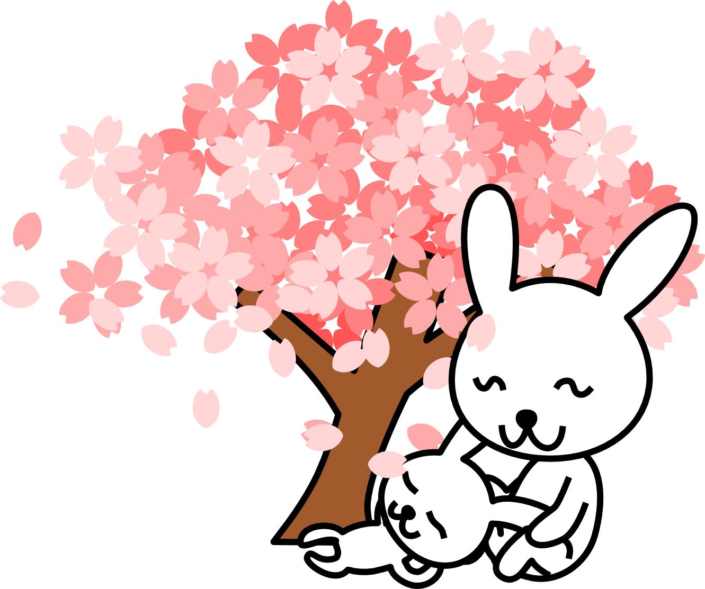
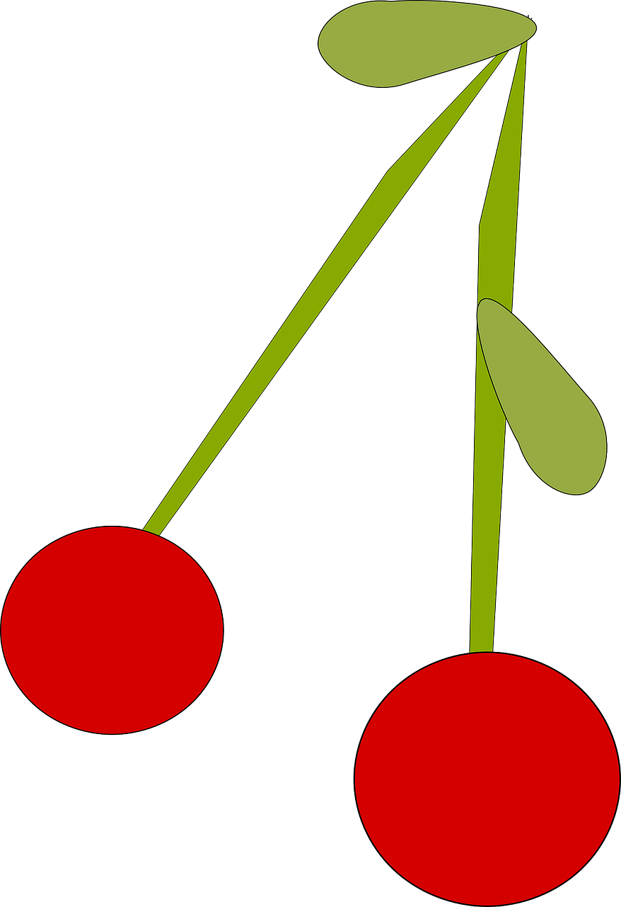

Cherry Blossom
A cherry blossom, also known as a Japanese cherry or sakura, is a flower of trees in the genus Prunus or the Prunus subgenus Cerasus. Wild species of the cherry tree are widely distributed, mainly in the Northern Hemisphere. They are common in East Asia, especially in Japan
n Europe, from the late 19th century to the early 20th century, Collingwood Ingram collected and studied Japanese cherry blossoms and created various ornamental cultivars. The culture of ornamental cherry blossoms soon began to spread. In the United States, ornamental cherry blossoms began to spread after Japan presented them as a token of friendship in 1912
In the mainstream classification in Europe and North America, cherry trees for ornamental purposes are classified into the genus Prunus, which consists of about 400 species. In the mainstream classification in Japan, China, and Russia, on the other hand, ornamental cherry trees are classified into the genus Cerasus, which consists of about 100 species separated from the genus Prunus. The genus Cerasus omits Prunus salicina, Prunus persica (Peach), Prunus mume, and Prunus grayana, amongst others

Classification
In Europe and North America, however, there were few wild cherry trees with large flowers suitable for viewing cherry blossoms. Many of them were different from the typical cherry tree shapes and flowers for cherry blossom viewing that people today imagine
In mainland China, there has been a culture of viewing plum blossoms since ancient times, and there were many wild species of cherry blossoms, but many of them had small flowers, and the distribution area of wild species of cherry blossoms, which bore large flowers suitable for hanami, was often limited to a small area away from people's living areas
On the other hand, in Japan, Prunus speciosa (Oshima cherry) and Prunus jamasakura (Yamazakura)
which bloom large flowers suitable for cherry blossom viewing and tend to become large trees, were distributed in a fairly wide area of the country and close to people's living areas. Therefore, it is considered that the culture of viewing cherry blossoms and the production of cultivars have developed historically in Japan
Cherry Fruit
A cherry is the fruit of many plants of the genus Prunus, and is a fleshy drupe (stone fruit).
Commercial cherries are obtained from cultivars of several species, such as the sweet Prunus avium and the sour Prunus cerasus. The name 'cherry' also refers to the cherry tree and its wood, and is sometimes applied to almonds and visually similar flowering trees in the genus Prunus, as in "ornamental cherry" or "cherry blossom". Wild cherry may refer to any of the cherry species growing outside cultivation, although Prunus avium is often referred to specifically by the name "wild cherry" in the British Isles.

Many of the cherry trees currently enjoyed for cherry blossom viewing are not wild species but cultivars. Because cherry trees have a mutable trait, many cultivars have been created for cherry blossom viewing, especially in Japan. Since the Heian period, the Japanese have produced many cultivars by selecting superior or mutant individuals that were born from natural crossings of wild cherry trees or by crossing them artificially and then breeding them by grafting and cutting. Oshima cherry, Yamazakura, Prunus pendula f.ascendens (syn, Prunus itosakura, Edo higan) and more examples which grow naturally in Japan are easy to mutate. The Oshima cherry epecially, which is an endemic species in Japan, tends to mutate into double-flowered, grow fast, have many large flowers, and have a strong fragrance; therefore, Oshima cherry has produced much sakura called Sato-zakura Group as a base of cultivars because of its favorable characteristics. The representative cultivars whose parent species is the Oshima cherry are the Yoshino cherry and Kanzan; Yoshino cherries are actively planted in Asian countries,
and Kanzan is actively planted in Western countries.

Blooming season
Many wild species and cultivars bloom from March to April in the Northern Hemisphere. Wild species, even if they are the same species, are genetically different from one tree to another, so even if they are planted in the same place, there is some variation in the time when they reach full bloom. On the other hand, cultivars are clones propagated by grafting or cutting, so each tree of the same cultivar planted in the same place is in full bloom and scattered all at once.
Some wild species, such as Edo higan and the cultivars developed from them, are in full bloom before the leaves open, giving a showy impression to the people who enjoy them. Yoshino cherry became popular as a cherry tree for cherry-blossom viewing because, in addition to these characteristics of simultaneous flowering and the fact that the flowers are in full bloom before the leaves open, it bears a large number of flowers and multiplies to become a big tree. Many cultivars of the Sato-zakura group, which were born from complex interspecific hybrids based on Oshima cherry, are often used for ornamental purposes and generally reach full bloom a few days after two weeks after Yoshino cherry reaches full bloom
The flowering time of cherry trees is thought to be affected by global warming and the heat island effect of urbanization. According to the record of full bloom dates of Yamazakura (Prunus jamasakura
in Kyoto, Japan, which was recorded for about 1200 years, the time of full bloom was relatively stable from 812 to the 1800s, but after that, the time of full color rapidly became earlier, and in 2021, the earliest full bloom date in 1200 years was recorded. The average peak day in the 1850s was around April 17, but in the 2020s, it was April 5, when the average temperature rose by about 3.4 °C (6.1 °F). According to the record of full bloom dates of the Yoshino cherry in the Tidal Basin in Washington, D.C., around 1921, it was April 5, but around 2021 it was March 31. These records are consistent with the history of rapid increases in global mean temperature since the mid-1800s